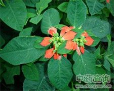

叶象花

拼音
Yè Xiànɡ Huā
别名
草本一品红（《海南植物志》），一品红（《文山中草药》）。
来源
为大戟科植物猩猩草的全草。全年可采。
生境分布
我国各地都有栽培。
药材特点
一年生草本，高约1米。茎直立、单生，有斜生开展的粗壮分枝，折断后有白色汁液流出，嫩茎中空，绿色。单叶互生，叶形多变化，卵形、椭圆形、深波状裂或不裂，中部及下部的叶长4～10厘米，宽2.5～5厘米，琴状分裂或不裂；叶柄长2～3厘米；花序下部的叶一部或全部紫红色。杯状花序，生于茎或分枝的顶端排列为密集的伞房状；总苞绿色钟形，顶端5裂；腺体1～2，杯状，无花瓣状附属物；子房卵形，3室，花柱3，离生，顶端2裂。蒴果卵圆状三棱形，直径约5毫米。种子卵形，表面有疣状突起。
性状
性状鉴别 全草长达80cm。叶互生；叶形多变化，卵形、椭圆形、披针形或条形，中部及下部的叶长4-10cm，宽2.5-5cm，提琴状分裂或不分裂；叶柄长2-3cm；花序下部的叶基部或全部紫红色。杯状花序多数在茎及分枝顶端排列成密集的伞房状；总苞钟形，宽3-4mm，顶端5裂；腺体l-2，杯状，无花瓣状附属物。蒴果近球形，直径5mm，无毛；种子卵形，有疣状突起。
性味
苦涩，寒。
功能主治
调经止血，接骨消肿。治月经过多，跌打损伤，骨折。
用法用量
内服：煎汤，3-9g，外用：适量，鲜品捣敷。
化学成分
种子含蛋白质。脂肪油，油中含亚油酸和亚麻酸等。
药理作用
1：花、叶的热水提取物在体外对结核杆菌（H37）有抑制作用：茎、根无效
2：叶或植物的浆汁有毒：食之可产生呕吐、腹泻、谵妄，毒性成分可能在树脂部分
摘录
《中药大辞典》